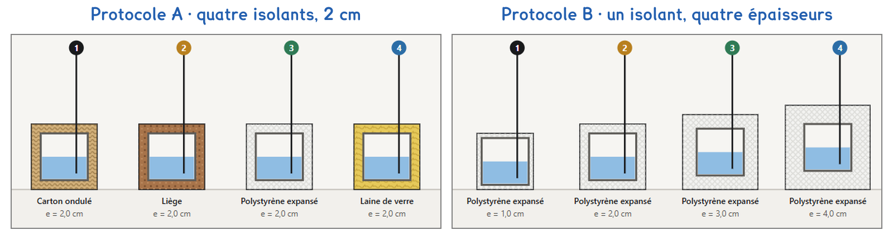

1re Bac Pro · OBM · TP sur simulation SIM-19
Pour qu'une paroi laisse passer le moins de chaleur, vaut-il mieux un meilleur isolant ou une couche plus épaisse ?
1 figure
Sujet. Pour isoler les combles d’une maison, le magasin de bricolage propose de la laine de verre, du polystyrène expansé et du liège. Un voisin conseille du carton, qui est gratuit.
Problématique : pour qu’une paroi laisse passer le moins de chaleur, vaut-il mieux choisir un meilleur isolant, ou en mettre une couche plus épaisse ?
La simulation. Ouvrir « Choisir un isolant » : le fichier isolant.html, sur l’ENT ou la clé du professeur.

La conductivité thermique λ, en W/(m·K), dit si un matériau conduit la chaleur : plus elle est petite, plus le matériau isole.
a) Relever λ dans la simulation, onglet A, menu des boîtes. Prévoir le classement.
| Isolant | carton | liège | polystyrène | laine de verre |
|---|---|---|---|---|
| λ en W/(m·K) | ||||
| Rang prévu, 1 = le meilleur |
Chaque boîte est un cube de 10 cm de côté : six faces de 10 cm × 10 cm.
b) Calculer la surface S de la boîte en m², et convertir l’épaisseur e en m.
S = 6 × ………… m × ………… m = ………… m² · e = 2 cm = ………… m
Une couche d’isolant laisse passer une puissance thermique proportionnelle à l’écart de température entre ses deux faces. Le facteur est sa conductance thermique, G = λ × S ÷ e, en W/K : plus G est petite, mieux la couche isole.
Dans la simulation, quatre boîtes identiques contiennent 0,5 L d’eau à 70 °C et refroidissent dans une pièce à 20 °C : l’eau joue la maison chauffée, la pièce joue l’extérieur.
Protocole A · quatre isolants. Carton ondulé, liège, polystyrène expansé et laine de verre, tous en 2 cm d’épaisseur.
Protocole B · quatre épaisseurs. Le même polystyrène expansé, en 1, 2, 3 et 4 cm.
c) Compléter le tableau pour comparer les deux protocoles.
| Protocole A | Protocole B | |
|---|---|---|
| Ce qui change d’une boîte à l’autre | …………………… | …………………… |
| Ce qui reste le même | …………………… | …………………… |
| Dans G = λ × S ÷ e, ce qui varie : entourer | λ · S · e | λ · S · e |
Le choix se fait maintenant ; le professeur peut imposer un protocole.
d) Quel protocole prenez-vous ? Justifier en une phrase.
Je prends le protocole ……… parce que ……………………………………………………………………
e) Avant de mesurer : quelle boîte refroidira le moins vite ? Justifier avec G.
Avant de commencer. Ouvrir isolant.html et cliquer l’onglet de votre protocole. Garder les réglages de départ : 0,5 L, 70 °C, vitesse « × 300 », arrêt automatique « toutes les 15 min ».
f) En coupe : eau, métal, isolant d’épaisseur e, air. Flécher la chaleur.
Le schéma se dessine sur la feuille du TP.
g) Recopier les températures lues, en °C.
| t (min) | Boîte 1 | Boîte 2 | Boîte 3 | Boîte 4 |
|---|---|---|---|---|
| Isolant et épaisseur | ||||
| 0 | ||||
| 30 | ||||
| 60 | ||||
| 90 | ||||
| 120 |
La carte 5 de la page vérifie les deux calculs suivants, boîte par boîte.
h) Calculer la baisse en une heure et la conductance G de chaque couche.
| Boîte 1 | Boîte 2 | Boîte 3 | Boîte 4 | |
|---|---|---|---|---|
| Baisse en 1 h (°C) | ||||
| G = λ × S ÷ e (W/K) |
i) Classer les boîtes, de la plus lente à refroidir à la plus rapide.
Classement : ……………………………… Suit-il celui de G ? Et votre prévision e ? ………………………
j) Avec l’autre protocole : quel polystyrène perd autant que 2 cm de carton ?
Comparer les baisses en 1 h avec un groupe de l’autre protocole.
Vérification avec G : ………………………………………………………………………………………
k) Citer deux effets qu’un vrai montage de quatre boîtes ajouterait.
l) Répondre à la problématique en deux phrases.
Ce que ce TP a établi, et qui vaut pour toute paroi :
À RETENIR
Une paroi laisse passer une puissance thermique proportionnelle à l’écart de température entre ses faces. Sa conductance vaut G = λ × S ÷ e : un bon isolant a une petite conductivité λ, et une couche plus épaisse isole mieux.
Deux centimètres de laine de verre valent près de quatre centimètres de carton : on choisit le matériau et l’épaisseur ensemble, avec le prix et l’impact du produit.
Passer de 2 à 4 cm divise G par deux. Avec les mesures du protocole B, la baisse en une heure est-elle divisée par deux ? Que gagne chaque centimètre de plus ?
TP sur simulation de physique-chimie. Le travail se fait sur la feuille du TP : cette page en est la version à l'écran, sans les lignes à remplir. La simulation s'ouvre sans réseau et n'enregistre rien.